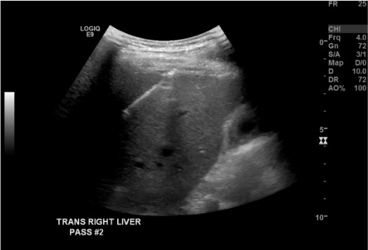
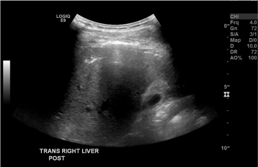

Indications / Contraindications
Indications
- Establish benign vs. malignant nature of a hepatic lesion
- Microbiological analysis in known or suspected hepatic infection
- Stage disease — local spread or distant metastasis
- Characterize diffuse parenchymal disease (cirrhosis, hemochromatosis, unexplained transaminitis)
- Tissue for biomarker, protein, or genotype analysis to guide targeted therapy
- Determine primary cell of origin in metastatic disease with unknown primary
- Note: Biopsy is not required when typical imaging features are sufficient (e.g., classic HCC with arterial enhancement + washout) — indicated when diagnosis is uncertain or molecular profiling is needed
Contraindications
- Absolute: Uncorrectable coagulopathy · No safe access window · Hemodynamic instability
- HIGH BLEEDING RISK — SIR Category 3
- Warfarin: Hold 5 days; target INR <1.8
- High thrombotic risk (mitral prosthesis, stroke within 6 months, VTE within 3 months, CHA₂DS₂-VASc >7) — bridge with UFH or LMWH
- Dual antiplatelet with stent <1 year: Multidisciplinary discussion required
Pre-Procedure Checklist
Relevant Anatomy
Access Routes
- Subcostal approach (preferred): Below right costal margin, directed superiorly toward target; avoids pleural space
- Intercostal approach (dome lesions): Between ribs, hugging superior rib margin to avoid intercostal vessels; risk of pleural transgression — use gantry tilt or angled approach. Right pleural reflections: 8th rib anterolaterally, 10th rib posterolaterally — dome lesions (Seg 7/8) often require supra-diaphragmatic intercostal entry; plan for pleural transgression and pneumothorax risk
- Include normal parenchyma in needle trajectory for tamponade effect on withdrawal
- Left lobe lesions: Epigastric approach — avoid gastric vessels and stomach
Danger Structures
- Portal vein and hepatic veins: Doppler before access
- Gallbladder: Can cause biliary peritonitis if transgressed — avoid
- Pleura/lung base: Intercostal approach risk; tilt gantry or angle needle away
- Inferior epigastric vessels: Stay lateral to rectus for subcostal approach
- Major bile ducts: Visualize on pre-procedure imaging; avoid
How I Do It
Default RadCall approach + community cards
Supplies
Steps
Select guidance modality
Position patient
Time-out and sterile prep/drape
Plan needle path
Local anesthesia
Breath-hold before insertion
Advance coaxial introducer

FNA (if being performed) + core biopsy
Tract embolization and withdrawal

Troubleshooting
Lesion not visible on US
Likely cause: Poor acoustic window, deep location, isoechoic lesion, or patient habitus.
Next step: Switch to contrast-enhanced US (CEUS) or CT. Adjust window/level. Reposition patient and repeat survey.
Needle tip artifact obscuring position
Likely cause: Beam angle or reverberation artifact on US; partial volume on CT.
Next step: On CT, use bone windows to improve needle visualization. Partially withdraw stylet to reduce tip artifact. Adjust probe angle on US to optimize needle echogenicity.
Inadequate specimen / failed biopsy
Likely cause: Necrotic target center, insufficient cores, or sampling error.
Next step: Ensure tip is at periphery, not necrotic center. For metabolically active targets, use PET guidance. Submit at least 2–3 cores. Consider on-site cytopathologist for rapid adequacy check.
Hemobilia after biopsy
Likely cause: Arteriovenous or arteriobiliary fistula from needle traversal of a vessel.
Next step: Immediate CT for characterization. If active arterial bleeding — angiography and embolization. Monitor bile for blood-staining during post-procedure observation.
Inadvertent gallbladder puncture
Likely cause: Distended gallbladder in access path not recognized on pre-procedure imaging.
Next step: Abort if bile is visible in syringe. Observation for biliary peritonitis. Cholecystostomy may be required if peritonitis develops.
Complications
Hemorrhagic
- Hemorrhage — most common significant complication; ~1–3% minor bleeding; ~0.2–0.5% major (requiring transfusion or embolization)
- Management: post-procedure observation; CT for pain/hypotension; angiography/embolization for active arterial bleed
- Hemobilia — arteriobiliary fistula; presents with RUQ pain, jaundice, GI bleeding (Quincke's triad)
Biliary and Other
- Biloma/bile leak (0.1–0.5%) — observation if small/asymptomatic; IR drainage + antibiotic coverage if symptomatic
- Biliary fistula — rare; associated with intercostal approach; risk reduced by subcostal route
- Pneumothorax — rare with intercostal approach; small → observation; large → chest tube
- Tumor seeding — extremely rare (<0.01%) with coaxial technique; higher risk with FNA of HCC without coaxial
- Infection/abscess — rare; prophylactic antibiotics not routinely indicated
- Death <0.01%; overall major complication rate <1%
Post-Procedure Care
Monitoring
- 1-hour observation is evidence-supported for uncomplicated cases (Adnan/Sheth TVIR 2021); 4–6h for high-risk patients (cirrhosis, coagulopathy, complex access)
- Vitals q30 min × 2h then q1h × 2h
- Pain assessment: RUQ/right shoulder pain is common and usually pleuritic (normal); sudden severe pain may indicate hemorrhage
- Diet: NPO first hour, then clear liquids, then regular if tolerating
- CBC at 4 hours for high-risk patients (cirrhotic, anticoagulated)
Discharge
- Discharge criteria: Stable vitals, tolerating PO, pain controlled, no signs of hemorrhage
- No strenuous activity × 24–48h
- Return to ED for: severe pain, hypotension, fever, jaundice, or GI bleeding
- Pathology results typically available 2–5 business days; notify ordering provider
Critical Pearls
Specimen Handling
Core Biopsy (Histology)
- Place immediately in 10% formalin for IHC, molecular testing, hepatic malignancy diagnosis
- 18-gauge preferred (higher nucleic acid yield vs 20-gauge for NGS/molecular profiling)
- Minimum 2–3 cores per target; 4–6 cores for diffuse disease (cirrhosis/hepatitis protocols)
- Label every container immediately at time of biopsy
FNA (Cytology)
- Deposit on slide immediately or in RPMI/saline for cell block, flow cytometry, molecular testing
- Performing both FNA (if being performed) + core provides the most diagnostic information
- If on-site cytopathologist available — rapid adequacy check at the table
Special Situations
| Clinical Suspicion | Container | Notes |
|---|---|---|
| Routine malignancy / IHC | 10% formalin | Standard for hepatic lesions |
| NGS / molecular profiling | RPMI or fresh snap-freeze | 18g preferred for nucleic acid yield |
| Suspected infection | Sterile saline or culture media | NOT formalin — will kill organisms |
| Suspected lymphoma | Fresh saline (NOT formalin) | Flow cytometry requires viable cells |
| FNA for cytology | RPMI or slides | Cell block for IHC if no core obtained |
Key Reminders
- Call pathology in advance — confirm needle size, containers, and need for special handling before the procedure starts
- Label every container immediately; never batch-label after the procedure
- Target the tumor periphery for viable tissue — avoid necrotic center